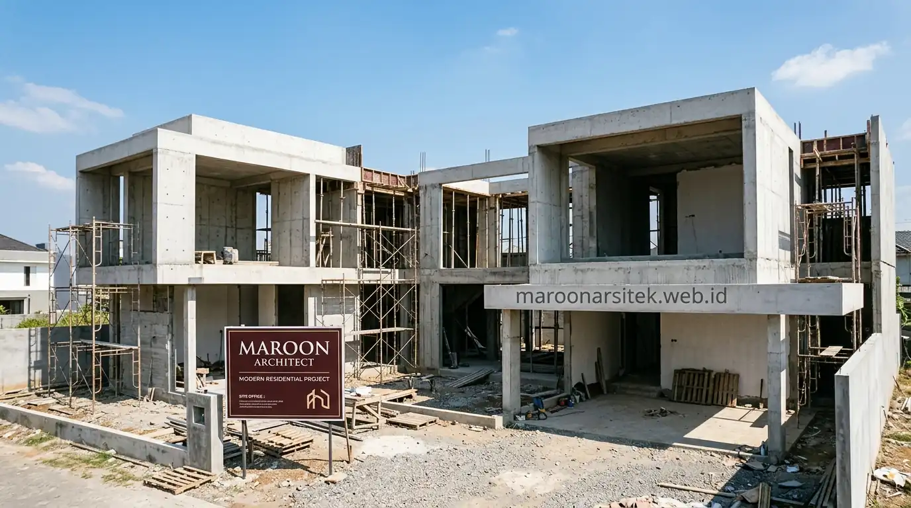

Membangun hunian impian di kawasan perkotaan yang padat seperti Jabodetabek memerlukan koordinasi matang antara perencanaan arsitektur, perhitungan biaya yang tepat, serta eksekusi konstruksi yang terstandar. Melalui layanan jasa kontraktor rumah profesional, seluruh proses tersebut dapat dijalankan secara efisien dan terpantau dengan jelas.
Sistem One-Stop-Solution untuk Pembangunan Rumah dari Awal hingga Selesai
Sistem one-stop-solution berarti klien tidak perlu mengoordinasikan sendiri arsitek, kontraktor, dan pengawas secara terpisah, karena seluruh tahapan ditangani oleh satu tim yang sama sejak desain hingga serah terima kunci. Pendekatan ini mengurangi risiko miskomunikasi antar pihak yang sering terjadi ketika desain dan pelaksanaan dikerjakan oleh vendor berbeda tanpa koordinasi jelas.
Alur kerja pada sistem ini umumnya dimulai dari konsultasi kebutuhan dan anggaran, dilanjutkan dengan proses desain arsitektur, penyusunan RAB, penandatanganan kontrak kerja, pelaksanaan konstruksi, hingga tahap serah terima disertai masa retensi atau garansi struktur. Setiap tahap memiliki dokumentasi tertulis sehingga klien dapat memantau progres tanpa harus hadir setiap hari di lokasi proyek.
Penyusunan RAB yang Transparan untuk Proyek Rumah Tinggal
RAB (Rencana Anggaran Biaya) yang transparan menjadi dasar kepercayaan antara klien dan kontraktor sebelum proyek berjalan. Rincian anggaran idealnya mencakup komponen berikut agar klien memahami alokasi biaya secara jelas:
- Biaya Pekerjaan Struktur: Meliputi galian tanah, pondasi footplat/bore pile, sloof, kolom beton bertulang, dan balok dak lantai.
- Biaya Pekerjaan Arsitektur: Meliputi pasangan dinding bata ringan, plester aci, kusen pintu/jendela, plafon gypsum, dan finishing lantai keramik/granit/marmer.
- Biaya Mekanikal & Elektrikal (MEP): Meliputi jalur instalasi pipa air bersih, air kotor, septictank, titik lampu, saklar, dan panel MCB listrik.
- Biaya Atap & Waterproofing: Rangka baja ringan, penutup genteng, talang air, serta lapisan waterproofing anti bocor pada area dak basah.
- Biaya Jasa & Manajemen Proyek: Upah tenaga kerja ahli dan supervisi manajemen proyek yang dipisahkan secara transparan dari biaya material fisik.
Rincian semacam ini memudahkan klien membandingkan penawaran dan memahami konsekuensi setiap perubahan spesifikasi terhadap total biaya proyek, termasuk ketika terjadi permintaan perubahan desain di tengah masa pelaksanaan.
Proses Pengawasan Lapangan pada Proyek Kontraktor Rumah
Pengawasan lapangan yang konsisten menentukan kesesuaian hasil bangunan dengan gambar kerja dan spesifikasi yang disepakati di awal. Beberapa praktik pengawasan yang diterapkan pada proyek jasa kontraktor rumah meliputi hal berikut:
- Pengecekan Kualitas Material: Verifikasi material yang tiba di lokasi sebelum digunakan, termasuk kesesuaian merek, dimensi besi tulangan, dan spesifikasi teknis dengan RAB.
- Inspeksi Titik Kritis: Pemeriksaan berkala pada tahap krusial, seperti pembesian sebelum pengecoran plat beton dan uji tekanan pipa sebelum penutupan dinding.
- Dokumentasi Progres Berkala: Laporan foto dan video mingguan yang dikirimkan secara teratur kepada klien.
- Koordinasi Mingguan: Evaluasi rutin antara pengawas lapangan, estimator, dan manajemen proyek untuk memastikan timeline tetap presisi.
- Uji Fungsi Instalasi: Pengujian komprehensif sistem kelistrikan, debit air bersih, dan kelancaran saluran pembuangan sebelum tahap serah terima kunci.

Pengawasan berlapis semacam ini membantu mengurangi risiko pekerjaan ulang (rework) yang umumnya menjadi penyebab utama pembengkakan biaya pada proyek konstruksi rumah tinggal, khususnya pada proyek dengan durasi pelaksanaan lebih dari enam bulan. Selain inspeksi teknis, pengawas lapangan juga bertugas memastikan keselamatan kerja di lokasi proyek tetap terjaga, mulai dari kelengkapan alat pelindung diri pekerja hingga penataan material agar tidak mengganggu akses keluar masuk lokasi selama masa konstruksi berlangsung.
Cakupan Layanan Kontraktor Rumah di Wilayah Jabodetabek
Layanan jasa kontraktor rumah Maroon Arsitek melayani proyek pembangunan baru maupun renovasi di wilayah Jakarta dan kawasan penyangga sekitarnya, termasuk Bogor, Depok, Tangerang, dan Bekasi. Koordinasi proyek dipusatkan dari tim manajemen di Jakarta, dengan penempatan pengawas lapangan menyesuaikan lokasi masing-masing proyek agar kontrol kualitas tetap terjaga meski jarak antar lokasi berbeda-beda.
Cakupan layanan ini mencakup rumah tapak satu lantai, hunian mewah dua hingga tiga lantai, hingga proyek jasa renovasi rumah total yang memerlukan penyesuaian struktur eksisting. Setiap proyek di luar wilayah inti tetap mengikuti standar kontrak kerja dan sistem pelaporan yang sama, sehingga kualitas pengerjaan tidak bergantung pada jarak lokasi dari kantor pusat.
Kontrak Kerja dan Skema Pembayaran Bertahap
Kontrak kerja yang jelas melindungi kedua belah pihak dari potensi sengketa selama proses pembangunan berlangsung. Dokumen kontrak pada jasa kontraktor rumah umumnya mencantumkan beberapa poin berikut secara tertulis:
- Spesifikasi Teknis Material: Daftar rincian material dan standar mutu pekerjaan yang disepakati bersama.
- Timeline Pelaksanaan: Jadwal kerja (master schedule) beserta komitmen waktu penyelesaian per tahapan.
- Termin Berbasis Progres Fisik: Skema pembayaran bertahap yang dicairkan sesuai opname progres fisik nyata di lapangan, bukan sekadar tanggal kalender.
- Ketentuan Masa Retensi: Jaminan pemeliharaan dan garansi struktur tertulis setelah bangunan diserahterimakan.
- Prosedur Perubahan Desain (Change Order): Alur resmi pengajuan revisi teknis di tengah jalan beserta perhitungan adendum biaya yang transparan.
Skema pembayaran berbasis progres fisik ini memberi rasa aman bagi klien karena pencairan dana sejalan dengan hasil pekerjaan yang dapat diverifikasi langsung di lapangan, bukan berdasarkan estimasi waktu semata.
Perbedaan Sistem One-Stop-Solution dengan Kontraktor Lepas Biasa
Model kerja kontraktor lepas yang hanya menangani pelaksanaan fisik tanpa keterlibatan pada tahap desain dan RAB cukup umum ditemukan di lapangan, namun model ini memiliki beberapa keterbatasan yang perlu dipahami sebelum klien menentukan pilihan:
- Koordinasi Desain & Bangun: Pada model lepas, klien harus mencari arsitek secara terpisah untuk gambar kerja, sehingga koordinasi teknis antara desain dan pelaksanaan bergantung sepenuhnya pada inisiatif klien sendiri.
- Transparansi RAB: Perhitungan RAB pada model lepas sering disusun secara global tanpa rincian volume pekerjaan per item, sehingga sulit ditelusuri ketika terjadi selisih biaya di tengah proyek.
- Sistem Pengawasan: Pengawasan lapangan pada model lepas umumnya dilakukan langsung oleh mandor tanpa laporan progres tertulis yang terstruktur kepada klien.
- Tanggung Jawab Tunggal: Pada sistem one-stop-solution, satu tim yang sama bertanggung jawab dari desain hingga serah terima, sehingga perubahan pada satu tahap dapat langsung disesuaikan pada tahap berikutnya tanpa miskomunikasi antar pihak.
Pemahaman terhadap perbedaan model kerja ini membantu klien menilai tingkat risiko dan kebutuhan keterlibatan personal yang harus disiapkan selama proses pembangunan berlangsung, terutama bagi klien yang memiliki keterbatasan waktu untuk mengawasi proyek secara langsung.
"Keberhasilan sebuah proyek rumah tinggal terletak pada keselarasan antara perencanaan gambar teknis, keterbukaan RAB, dan disiplin pengawasan mutu di lapangan."
— Project Manager, Maroon Arsitek
Estimasi Durasi Pengerjaan Berdasarkan Jenis Proyek
Durasi pengerjaan rumah tinggal dipengaruhi oleh luas bangunan, tingkat kompleksitas desain, dan kondisi akses lokasi proyek. Gambaran umum berikut dapat menjadi acuan awal sebelum perhitungan detail dilakukan melalui survei lahan:
- Rumah 1 Lantai (100–150 m²): Umumnya memerlukan waktu pelaksanaan konstruksi sekitar 4 hingga 6 bulan, tergantung kompleksitas fasad dan finishing.
- Rumah 2–3 Lantai (200–350 m²): Memerlukan waktu sekitar 7 hingga 10 bulan karena adanya tahapan curing beton struktur atas dan pengerjaan atap.
- Renovasi Total: Cenderung memerlukan tahap pembongkaran hati-hati dan penguatan struktur lama sebelum pekerjaan baru dimulai.
- Aksesibilitas Lokasi: Lebar jalan menuju lokasi turut memengaruhi kecepatan mobilisasi truk mixer dan material berat.
Estimasi durasi yang akurat baru dapat disusun setelah tim melakukan survei lahan langsung dan menetapkan spesifikasi teknis final bersama klien, karena setiap kondisi lapangan memiliki variabel yang berbeda satu sama lain.
Layanan Purna Bangun dan Garansi Struktur
Layanan jasa kontraktor rumah yang lengkap tidak berhenti pada momen serah terima kunci, melainkan mencakup pula tanggung jawab purna bangun untuk memastikan kualitas konstruksi tetap terjaga dalam periode tertentu setelah klien mulai menempati rumah:
- Masa Retensi & Garansi Konstruksi: Jaminan tertulis dalam kontrak kerja yang mencakup komponen struktural, kebocoran atap, dan instalasi mekanikal.
- Prosedur Pelaporan Cepat: Jalur komunikasi responsif bagi klien apabila ditemukan kendala teknis pascahuni.
- As-Built Drawing: Penyerahan dokumen gambar terbangun aktual yang sangat berguna jika pemilik rumah ingin melakukan pengembangan di masa mendatang.